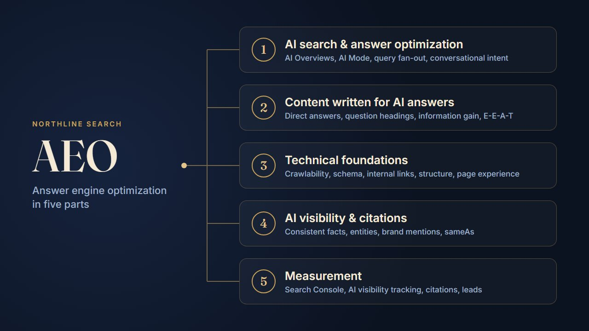

Answer engine optimization (AEO) is the work of making your pages the source an AI answer quotes. Google AI Overviews, AI Mode, ChatGPT, Perplexity and Gemini increasingly answer the question directly and cite a handful of sources. AEO is how you become one of them.
It isn't a replacement for SEO. AI answers mostly pull from pages that already rank and that crawlers can read. On a Florida law firm we worked with, the same work that grew organic clicks 90.6% in six months also got 61 of its pages cited across AI Overviews, AI Mode, ChatGPT and Gemini. Strong SEO came first; AEO built on it.
AEO has five parts. Here is what each one means in practice.
1. AI search and answer optimization
This is about how AI search engines find and pick answers.
- AI Overviews and AI Mode: Google's AI answers draw on its normal search index. If a page isn't indexed and ranking reasonably, it is unlikely to be cited.
- Query fan-out: AI Mode breaks one question into several related searches and combines the results. A page that answers the main question and the obvious follow-ups (cost, timing, risks, alternatives) has more chances to be picked.
- Conversational intent: people type full questions into AI tools ("how much does foundation repair cost in Baltimore?"), not two-word keywords. Plan content around those questions.
Do first: list the 20 questions customers ask before they buy. Check which ones your site answers clearly, and on which page.
2. Content written for AI answers
AI tools quote passages, not whole pages. A passage gets quoted when it answers cleanly on its own.
- Direct answers: put a one or two sentence answer right under the question heading, then the detail. Don't make the reader (or the model) wade through an introduction.
- Question-based headings: use the customer's wording as the heading, so the match is obvious.
- Information gain: add something other pages don't have: your prices, your project numbers, your process, a local detail. AI answers that summarise ten identical pages have no reason to cite yours.
- Entities: name things specifically: your business, your city, the products and standards you work with. Vague copy is hard for a model to attach to anything.
- E-E-A-T signals: show who did the work and why they're qualified: real names, credentials, reviews and case studies.
Do first: rewrite the opening of your five most important pages so the first two sentences answer the page's main question.
3. Technical foundations
None of the content work matters if crawlers can't read the page or understand what it's about.
- Crawlability and indexing: AI crawlers can be blocked by robots.txt, CDN bot settings or the server's firewall. We explain how to test all three in how to check whether AI crawlers can read your site, or you can use our free AI crawler checker.
- Structured data: JSON-LD schema (Organization, LocalBusiness, Service, FAQ, Article) states facts in a form machines read without guessing: who you are, where you operate, what you offer.
- Internal linking: link answer articles to the service and location pages they relate to, so both search engines and readers can follow the path.
- Content structure: real HTML headings, lists and tables, with the text in the page itself, not loaded later by JavaScript or hidden in images.
- Page experience: fast, mobile-friendly and accessible pages. A slow page with a lazy-loaded hero can still rank, but it starts at a disadvantage (see our LCP article).
Do first: confirm AI crawlers aren't blocked, and that your homepage has valid Organization or LocalBusiness schema.
4. AI visibility and citations
AI tools prefer sources they recognise and can verify.
- Consistent facts everywhere: your name, address, phone, service areas and years in business should match on your site, Google Business Profile and directory listings. Conflicting facts make a business harder to trust and to cite.
- Entity recognition: link your profiles together with
sameAsin your Organization schema (Google Business Profile, LinkedIn, BBB, industry directories), so models connect them as one business. - Brand mentions: mentions on other trusted sites (local news, industry associations, review platforms), even without a link, help AI tools see you as an established source.
- Preferred sources: Google now lets users pick preferred sources for Top Stories. For news-style content, it's worth asking loyal readers to add you.
Do first: search for your business name in ChatGPT and Gemini. If the facts they give are wrong or thin, fix your Google Business Profile and directory listings before anything else.
5. Measurement
This is the hardest part, and where most reports overclaim.
- Search Console: clicks and impressions from AI Overviews and AI Mode are counted in your normal web search totals. There's no separate filter, so watch overall trends on the pages you optimise rather than expecting an "AI" line.
- AI visibility tracking: tools such as Semrush's AI Visibility report track whether your brand appears for a set of prompts. Treat the numbers as directional: AI answers change from one run to the next.
- Manual checks: keep a short list of key questions and check monthly which sources ChatGPT, Perplexity, Gemini and AI Overviews cite. Screenshots beat memory.
- Business results: track calls and form leads by landing page. A citation only matters if it leads to enquiries.
- Images and video: AI search increasingly uses images and video too, so descriptive file names, alt text and captions are worth the effort.
Do first: pick 10 to 20 questions that matter to your business, record who gets cited today, and check again in 60 days.
What AEO is not
A few things get oversold:
- llms.txt: a short Markdown summary at your site root can help some AI tools find your key pages, but Google has said it doesn't use it for Search. It's a small extra, not a strategy.
- Guarantees: nobody can guarantee an AI citation. What you control is whether your pages are readable, trustworthy and the clearest answer available.
- Mass-produced FAQ pages: hundreds of thin, AI-written Q&A pages add no information and can hurt the rest of the site.
Where to start
If you only do three things this month:
- Make sure AI crawlers and Googlebot can read every important page.
- Put a direct, specific answer at the top of your five most important pages.
- Make your business facts match everywhere, and link your profiles with Organization schema.
Then measure, and expand to the next set of questions.